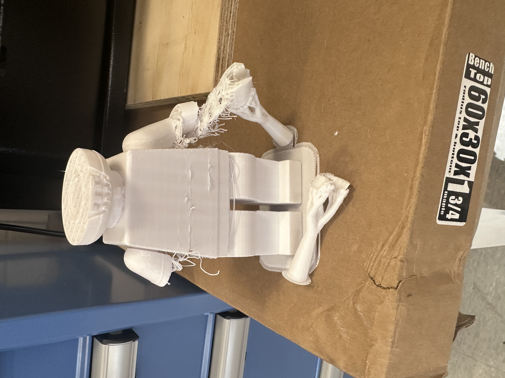
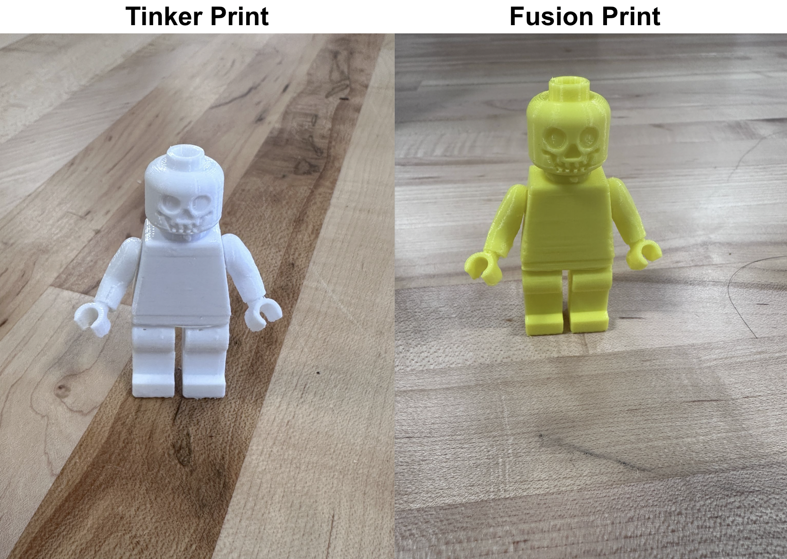

Print Settings
For the printing setting, I chose a .20mm speed because in terms of detailing this speed serves as a very good middle ground. It is more optimal than the .20mm structural option because that would take days to complete the print. The speed option offers great speed for the prints whilst being deliberate in the detailing of the model. Also, structurally the number in front of the mm represents the thickness of each layer, and .20 allows for thick layers of the print providing structural integrity for the print.
Shifting focus to the filament I used generic PLA for both of the prints. One major benefit of PLA is it provides highly accurate dimensions during the printing process. This is important because improper dimensions can lead to a warped print with various overhangs. Another advantage of PLA is it is very easy to print as it has a low printing temperature compared to other filaments paired with a wide variety of color options making it great for beginners like myself.
I used supports for the enforcers only which is very key in terms of finalization of the print. This setting pairs with the paint-on support tool, and it will only add support to the areas highlighted in blue as shown above. This not only helps the print to be structurally sound but makes removing the excess filament after the print much easier.
Finally, for the print settings, I used an infill of 15%. This percentage determines how much of the internal volume of the print will be filled with the PLA filament. 15% is a great percentage as it allows the print to remain light and simultaneously provide strength for the print.
Printing results
I then sliced the model and exported the g-code to the USB so that it could be printed. I plugged in the USB into the Prusa Mini + printer. The initial print was a fail due to two factors. The first of those was the rafting on the bottom was not wide enough to connect to the supports that were added onto the hands. The second issue was the supports themselves did not have enough surface area on the base of the printer causing them to disconnect resulting in the failed print.
Printing fix

Moreover, after revising my design in Prusa Slicer I then discovered that the shoulders were also floating. A defined problem in this print is the first layer of the print not having a firm connection to the base of the printer. The lack of adhesion caused major problems for the print as it resulted in the nozzle outputting filament onto the base of the printer as it had nothing to build upon. To resolve this issue, the surface area must be increased, and to do this, Prusa Slicer has a raft function under the support settings menu. Essentially, the rafts are a support material that goes under the print to provide a stable base. I fixed all of these errors by expanding the raft to 15mm and then adding supports to the underside of the shoulders with the paint on supports tool. This tool provided me with a precise placement for where I wanted the supports to be, rather than just anywhere on the print, assisting majorly in a successful print by way of adding an extra layer of reinforcement.
Final Prints
I then ran the prints again and they both turned out to be successful as the model was now fully supported so that it could print properly. Comparatively the fusion model turned out a bit smoother than the tinker model which was a bit rough around the edges. Overall though the two prints came out to be very similar.
Review
(Goals)
I completed my goal for the project of successfully remixing two different 3D models. My reasoning for choosing the two Lego designs is that I know in the real world, the blocks are universal, so I wanted to test the limitations of the printer to see if that could be matched. This process was by no means linear as my print failed multiple times prior to the successful print. However, through each failure, I was learning more about the software as I was able to utilize its tools to make the needed corrections. All in all, I would say this section of the project was an accomplishment in the right direction.
(Optimization)
In terms of design optimization, one alteration that I would make is to ensure that the raft layers are strong enough to support the print. Increasing the number of raft layers ensures my print has a stable base to develop from. Also, I would close the feet of the Lego figure to allow for more surface contact with the base of the printer. The printed model had minimal contact with the base as the feet were hollow.
(Future Improvement)
In the future, I would add more support enforcers to the lower back of the model. This is because the printer had some trouble connecting the lower abdomen to the legs. By adding support in this area it would provide a smoother print in the future. I would also go back into the CAD design tools to try and smooth out some areas of the body such as the front of the face, the hands, and the feet. I would do this by adding fillets to these sharp areas so that I could output a more optimal geometry for the model.